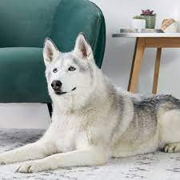

This is my first independent project for my HTML and CCS coding course. This is a HTML page I have created to show off my skills and understanding of the courses I have studied for the past two weeks. It is my hope to use this page as both a starting point of my foray into coding, as well as a visual representation of where I started in coding when I compare my progress over the next few weeks.
Here is a list of my favorite kinds of foods:
And here is a list of five of my favorite instruments, top to bottom
Another piece of trivia about me is whether I am a cat person or dog person. I like both, but am partial to one over the other as I've had two as pets in my past. Can you guess which? I will give you a hint...
A great place to see videos of dogs, and many more things is YouTube. I spend an embarrassing amount of time there watching a variety of things from cooking recipies, documentaries and travel blogs, as well as funny animal videos.